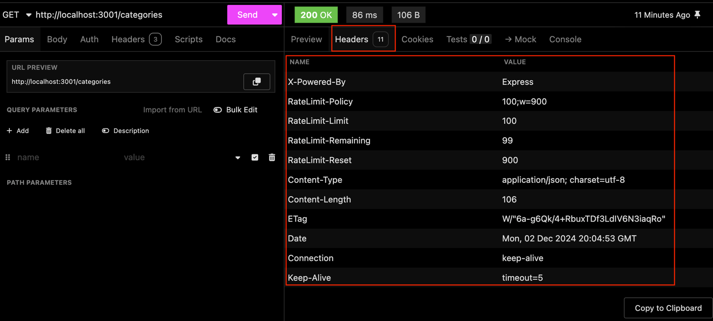
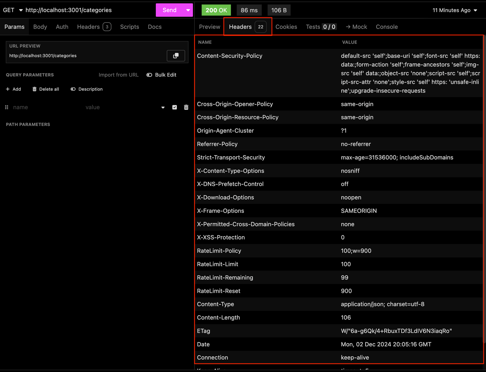

8.4 - Proteção de Cabeçalho com Helmet
A proteção de cabeçalhos HTTP é uma das práticas essenciais para fortalecer a segurança de aplicações web. O Helmet é uma biblioteca que ajuda a proteger sua aplicação contra vulnerabilidades comuns configurando os cabeçalhos HTTP adequadamente.
O que é o Helmet?
O Helmet é um conjunto de middlewares que ajusta os cabeçalhos HTTP de uma aplicação Express, adicionando proteções contra ataques e exposição de informações sensíveis.
Sem o Helmet, sua aplicação pode estar vulnerável a ataques que exploram configurações padrão ou cabeçalhos mal configurados.
Principais Benefícios
-
Mitigar vulnerabilidades comuns: Configurações padrão de cabeçalhos HTTP podem deixar a aplicação exposta a ataques conhecidos.
-
Facilidade de uso: O Helmet fornece uma configuração pronta, mas permite ajustes personalizados conforme necessário.
-
Boas práticas de segurança: Simplifica a adoção de padrões recomendados, como OWASP e segurança em navegadores.
Proteções padrão do Helmet
Por padrão, o Helmet habilita uma série de proteções importantes, dentre elas:
-
Content-Security-Policy (CSP): Ajuda a prevenir ataques de Cross-Site Scripting (XSS) e outros tipos de ataques de injeção de conteúdo.
-
Cross-Origin-Resource-Policy (CORP): Restringe quais origens podem acessar recursos compartilhados.
-
Strict-Transport-Security (HSTS): Força o uso de conexões HTTPS, protegendo contra ataques do tipo Manipulator-in-the-Middle (MitM).
-
X-Content-Type-Options: Previne que navegadores interpretem arquivos como HTML, evitando ataques de MIME-sniffing.
Adicionando o Helmet à sua Aplicação Cookmaster
Primeiro, instale o Helmet na sua aplicação com o seguinte comando:
npm install -E helmet@8.0.0
No arquivo src/app.js, basta importar o Helmet e usá-lo como middleware global:
// src/app.js
// const express = require('express');
const helmet = require('helmet');
// require('express-async-errors');
// Outras Importações
// const app = express();
app.use(helmet());
// app.use(express.json());
// app.use(rateLimiter);
// app.use(speedLimiter);
// Outras Configurações e Rotas
Com apenas essa linha app.use(helmet()), sua aplicação já estará protegida por padrão com todas as proteções oferecidas pelo Helmet.
OBS da IA
Alternativa mais moderna
- Helmet 8 é a versão atual. O
require('express-async-errors')que aparece no código é dispensável no Express 5, que já trata erros de handlersasync(veja a OBS da lição 3.14), e o pacote está sem manutenção.
Para o SAP CAP
- No CAP o Helmet entra via
cds.on('bootstrap', (app) => app.use(helmet())). Em apps Fiori no BTP, cabeçalhos como CSP costumam ser definidos no approuter.
Teste: Antes e depois do Helmet
Teste sem o Helmet
Faça uma requisição para qualquer rota da sua aplicação, por exemplo, GET /categories, usando o Insomnia. Você verá que os cabeçalhos padrão da resposta (Headers) estarão parecidos com a imagem abaixo:

O que analisar:
- Cabeçalho
X-Powered-By: Este cabeçalho expõe que sua aplicação utiliza Express. Embora pareça inofensivo, ele revela a tecnologia usada no back-end, o que pode facilitar ataques direcionados contra vulnerabilidades específicas do Express.
Teste com o Helmet
Agora, habilite o Helmet conforme mostrado anteriormente e refaça a mesma requisição:

O que mudou:
- Cabeçalhos adicionados: Várias camadas de proteção foram habilitadas automaticamente.
- X-Powered-By removido: Menos informações sobre sua tecnologia estão expostas.
Esses novos cabeçalhos fortalecem a segurança e reduzem vulnerabilidades.
Personalizando o Helmet
O Helmet também permite configurações específicas para atender às necessidades do projeto.
Por exemplo, para habilitar a proteção contra ataques de Cross-Site Scripting, você pode configurar o Content-Security-Policy:
app.use(helmet({
contentSecurityPolicy: {
directives: {
defaultSrc: ["'self'"],
scriptSrc: ["'self'", 'code.example.com'],
},
},
}));
Explicação das Configurações:
-
defaultSrc: Define a origem padrão para todos os recursos não especificados, como imagens, estilos e scripts. No exemplo, estamos permitindo que todos os recursos sejam carregados apenas da mesma origem ('self').
-
scriptSrc: Restringe os scripts que podem ser carregados, permitindo apenas os que vêm da mesma origem ('self') ou de um domínio confiável especificado (code.example.com).
Essas configurações são úteis para reforçar ainda mais a segurança, controlando exatamente o que pode ser carregado e de onde.
Com o Helmet implementado, sua aplicação estará protegida contra uma ampla gama de vulnerabilidades comuns, de maneira eficiente e fácil de gerenciar. Além disso, sua configuração personalizada permite atender a requisitos específicos de segurança, alinhando a aplicação às melhores práticas recomendadas.
Minhas anotações
Atalhos: ← → navegar · Ctrl K ou / buscar